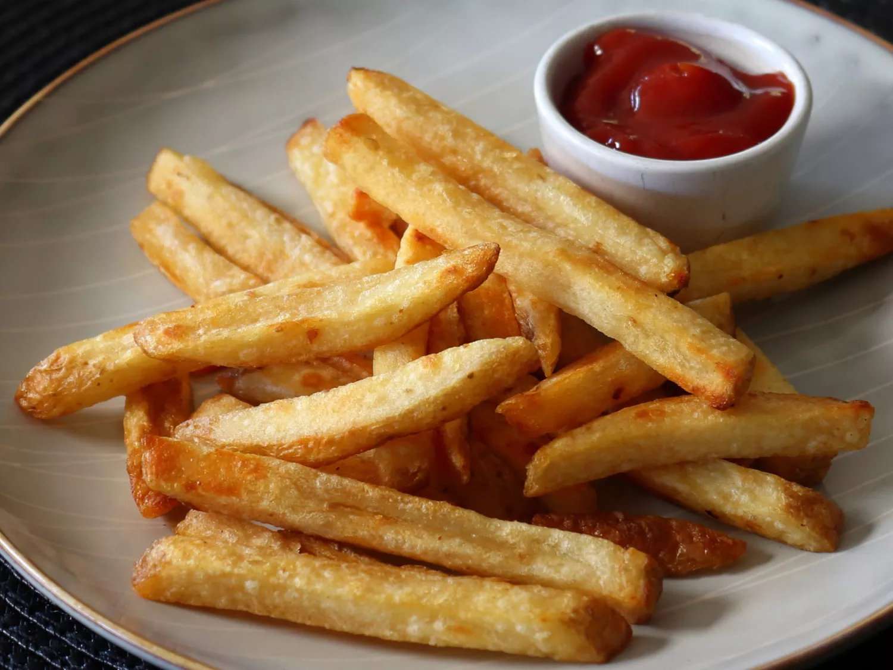

Splendid Fries

Here's some nice crunchy fries that will make a great side for whatever entree you're making them with. These
aren't your typical fries that can just be bought from the store. No, these are way better than that and once
you try them you won't ever stop making them for as long as you live.
Ingredients
- 1 large russet potato, cut into evenly sized strips
- 2 cups vegetable oil for frying, or as needed
- Salt
Steps
- Soak potato strips in a large bowl of water for about 30 minutes. Pat with paper towels until thoroughly
dry.
- Heat oil in a deep-fryer or large saucepan to 275 degrees F (135 degrees C). Gently add potatoes to the hot
oil and fry for about 5 minutes, stirring and flipping the potatoes occasionally. Use a slotted spoon to
transfer potatoes to a paper towel-lined plate. Let cool completely.
- Heat oil again, but this time to 350 degrees F (175 degrees C). Add potatoes and fry a second time until
golden brown, 5 to 6 minutes.
- Remove from the deep-fryer and blot with a paper towel. Sprinkle with salt to serve.